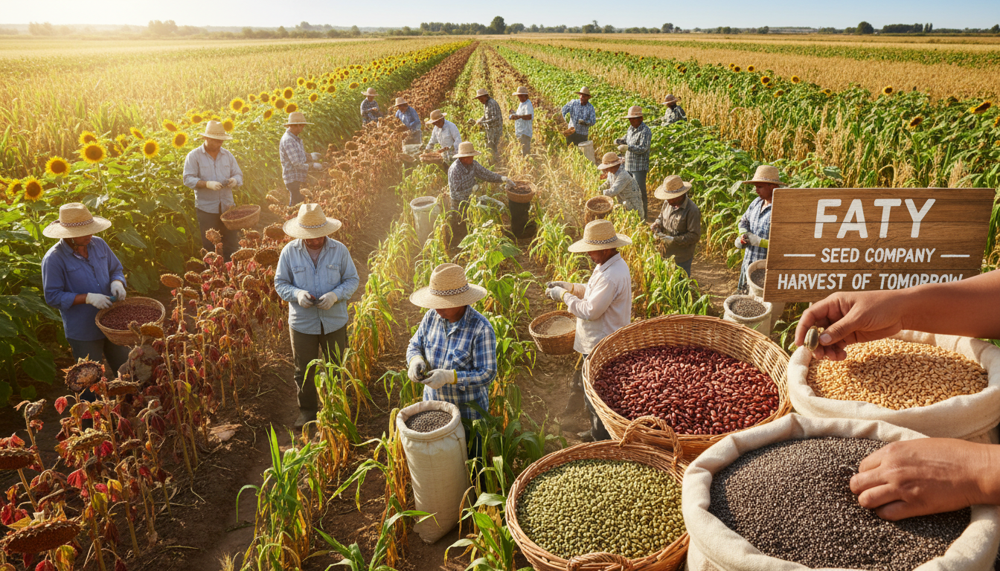
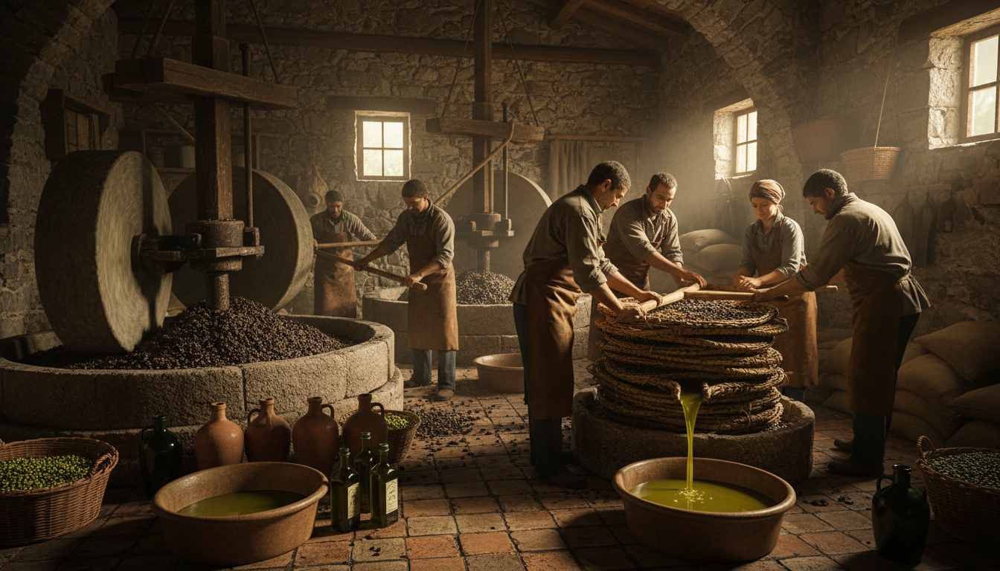
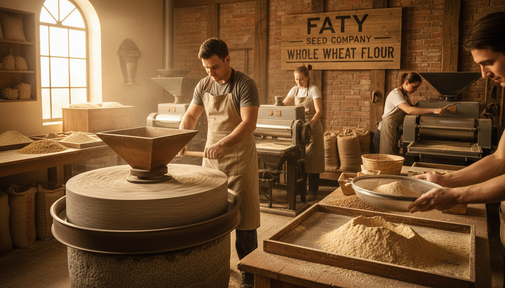
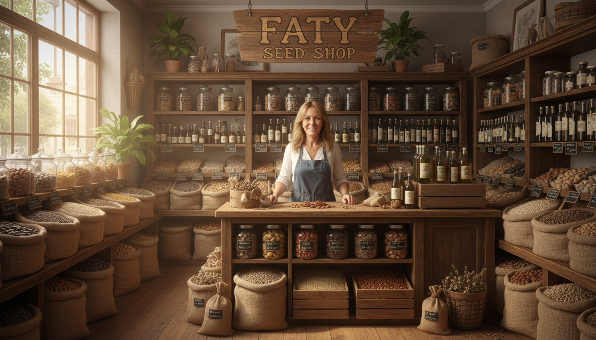

Nuestra Historia
FATY es una empresa que nació del sueño de mi madre, cuyo nombre inspira nuestra marca. Desde siempre quiso tener una semillería donde pudiera compartir su amor por los alimentos naturales, saludables y nobles como los frutos secos, las semillas y los aceites artesanales. Hoy, ese sueño se volvió realidad a través de este proyecto familiar construido con dedicación, esfuerzo y el deseo de ofrecer lo mejor a cada uno de nuestros clientes.
Nuestro Objetivo
En FATY buscamos brindar productos de excelente calidad, seleccionados cuidadosamente para promover un estilo de vida saludable. Creemos en la alimentación consciente, en el respeto por el origen de cada alimento y en acercar productos que aportan bienestar y energía a quienes confían en nosotros.
Nuestros Valores
Nos guiamos por valores que forman parte de la esencia de nuestra empresa: la honestidad, el compromiso, la calidad, el trabajo en equipo y la pasión por ofrecer alimentos que nutran el cuerpo y el alma. Cada producto que vendemos representa nuestra responsabilidad con la salud y el bienestar de nuestros clientes.



